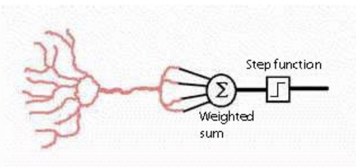
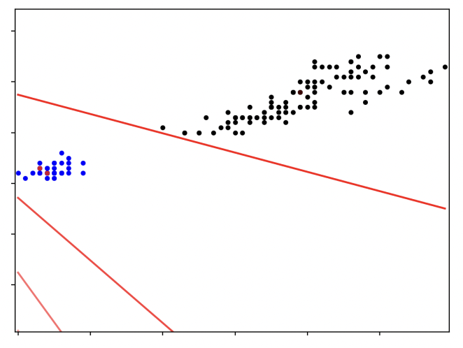
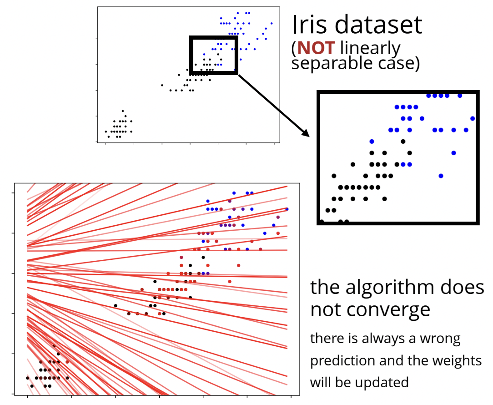
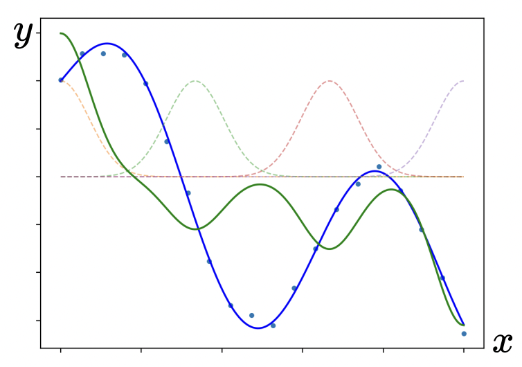
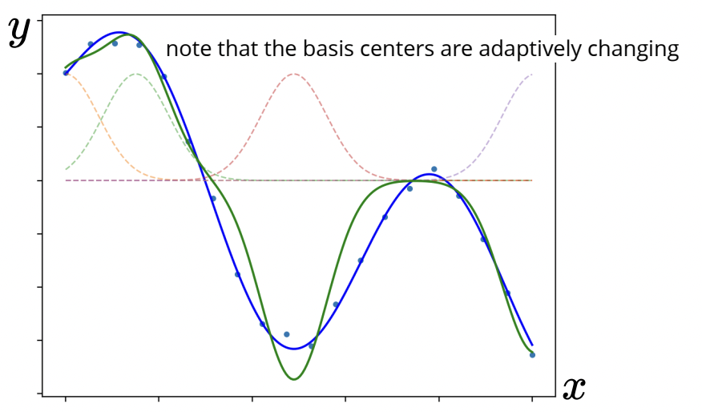
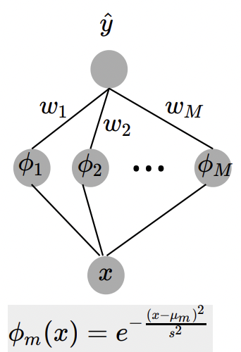
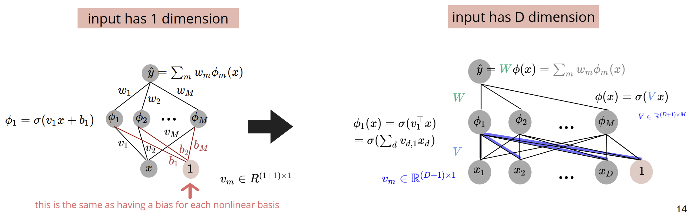

Multilayer Perceptron
The perceptron was the first model to come out the connectionist paradigm of machine learning, which takes inspiration from neuroscience and how neurons interact within the brain. With a perceptron, you model a neuron by a sum of activations (both excitatory and inhibatory) coming from other neighboring neurons. If this weighted sum of signals coming from these neurons reach a certain threshold, the neuron will potentiate (as modelled by some step function).
The first version of a perceptron looked something like:
$$f(x)=\text{sign} \left(\mathbf{w}^{\top}\mathbf{x}+w_0\right)$$Where $\mathbf{x}$ is the vector input to the perceptron, analogous to the strength of signals coming into the neuron. Similarly to regression, we have a weight vector $\mathbf{w}$, and a bias term $w_0$. The sign function is just a step function - in that it returns $+1$ for positive inputs, and $-1$ for negative inputs.
These are typically used in classification problems, and so we assume the usual: $x^{(n)}$ represents ourt features, and our $\hat{y}^{(n)}$ are the predictions. Of course, if $y^{(n)}\hat{y}^{(n)}< 0$, this implies our predicted outcome and true outcome are of different signs and therefore were classified differently (and our model prediction was incorrect/misclassified). And so, it makes sense that the loss function we want to minimize will look something like: $-y^{(n)}\left(\mathbf{w}^{\top}\mathbf{x}+w_0\right)$This is positive for points that are on the wrong side (misclassified), and so we minimize it and push them to the right side.
Indeed, if $y^{(n)}\hat{y}^{(n)}< 0$, we minimize:
$$J_n(\mathbf{w})=-y^{(n)}\left(\mathbf{w}^{\top}x^{(n)}\right)$$Otherwise, do nothing (note we drop the bias term for simplicity). For optimization, we can use stochastic gradient descent:
$$\nabla J_n(\mathbf{w})=-y^{(n)}x^{(n)}$$And proceed to iteratively update the weights through the following:
$$w^{\{t+1\}}\leftarrow w^{\{t\}}-\alpha \nabla J_n(\mathbf{w})=w^{\{t\}}+\alpha y^{(n)}x^{(n)}$$For perceptrons, it is okay to use a learning rate of $1$, since scaling the weights does not affect the prediction, i.e $\text{sign}\left(\mathbf{w}^{\top}\mathbf{x}\right)=\text{sign}\left(\alpha \mathbf{w}^{\top}\mathbf{x}\right)$. Also worth noting is that by the Perceptron Convergence Theorem, gradient descent is guaranteed to converge in a finite number of steps if the data is linearly separable.
The above shows an example of the Iris data set, and a set of lines that gradually converge to properly separate the data. As we can see, there are two distinct classes that can be separated by a line, and this is what we call linearly separable data.
Below shows an example of non linearly separable data, and so the algorthm will not converge as you cannot perfectly classify every data point, and so the weights will be continuously updated (and not even in a way that necessarily improves the classification - it tends to be more random).
We see that an issue we run into is that the perceptron is not expressive enough, meaning it cannot express complex functions. One way we have seen to increase model expressiveness is to used fixed nonlinear bases. But for neural networks, it is more common to use adaptive bases, where we can learn the parameters of the bases themselves. Let's get a feel for adaptive bases by looking at some examples we have seen:
Adaptive Gaussian Bases
In the non-adaptive case, recall we express our model by a weighted sum of Gaussian bases, and train it by minimizing some cost function, such as the mean squared error (which is convex in $w$). The model is linear in parameters $\phi(x)$, but of course non-linear in $x$. In the end, we can train data based on the blue curve below to get the green fitted curve.
\begin{align*} \text{Model:} & \;\;f(x;w)=\sum_m w_m \phi_m(x) \\ \text{Cost:} & \;\; J(w)=\frac 12 \sum_n \left(f(x^{(n)};w)-y^{(n)}\right)^2 \end{align*} In the adaptive case, you not only have $w$ as a learnable parameter, but as $\mu$, the means of each of the Gaussian bases. In this case, the loss function is no longer to be guaranteed convex in all model parameters, and so we use gradient descent to find a local minimum. Notice we get a better fit than the one above.
$$\text{Model:}\;\;f(x;w,\mu)=\sum_m w_m \phi_m (x;\mu_m)$$ Below is a nice illustration for how these models work: You have an input $x$ corresponding to a single feature, and you pass it through each of the Gaussian bases and sum the resulting outputs to give you your prediction.
Adaptive Sigmoid Bases
And similarly, for the adaptive case, we can re-write the sigmoid basis function as:
$$\phi_m(x)=\sigma\left(\frac{x-\mu_m}{s_m}\right)=\sigma\left(v_mx+b_m\right)$$And so our model is:
$$f(x;w,v,b)=\sum_m w_m \sigma \left(v_mx+b_m\right)$$And then similarly optimize using gradient descent to find a local minimum.
We can then try to generalize this. If we have some input $\mathbf{x}$ with dimension $D$, then we will have one weight vector per dimension of our input (i.e the weights are a matrix). Here, $\color{blue}V$ represents the parameters of the bases themselves, and $\color{green}W$ are the weights of the model linear in $\phi_m(x)$. And so, our model will look like:
$$\phi_m(x)=\sigma\left(v_m^{\top}x+b_m\right)\;\;\;\;\forall \;m$$ Notice we concatenate a $1$ in our input for the bias term. We can start to see how this is forming a neural network, on the right we have a two-layer neural network with a so-called "hidden layer", where we train our basis parameters. We typically optimize $\color{blue}V$ and $\color{green}W$ using gradient descent.